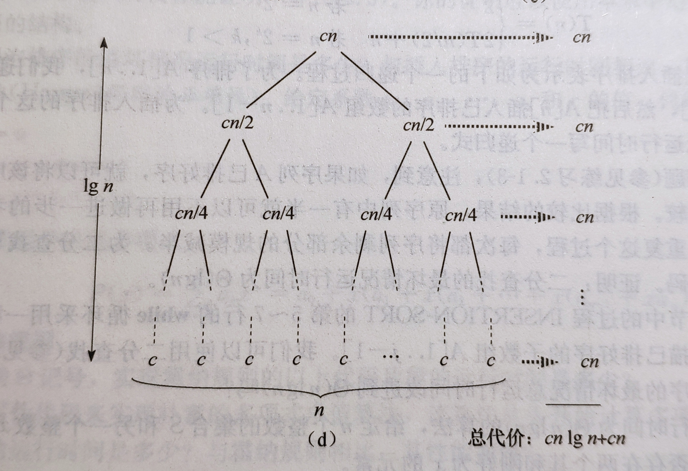

递归表达式
递归表达式是非常强大的工具，它能用最简单的式子表达出复杂的问题。但是很多时候要求算法的复杂度时，递归就成了我们的障碍，因此，了解递归式的解法是有很必要的。 以下介绍三种递归式的解法：
代入法
先猜测一个界，然后通过数学归纳法证明这个界是正确性。从方法的描述就能看出这种方法不常用，因为它过于mathematical，对于我这种数学菜鸡用起来就是灾难。
递归树
这是最通用的方法，没有太多限制，使用起来比较简单，唯一的缺点是不够严谨。
递归树，即把递归式转化成一棵树，用结点表示递归调用的代价。最后通过求和来求解递归式。
首先从归并排序这一简单的例子来进行说明，首先规定\(T(n)\)是排序算法的最坏情况运行时间，不难得到其递归表达式：
\[ T(n)=\left\{ \begin{array}{rcl} \Theta(1) & & n=1\\ 2\Theta(n/2)+\Theta(n) & & {n>1} \end{array} \right. \]

从图片可以看出递归树的每层和为\(cn\)，每层的高度为\(\log n\)，求和就能得到\(T(n)=\Theta(n \log n)\)
主定理
主定理(master theorem)，听名字你就能看出这是一个很吊的定理。事实上它是由递归树推导出的三个公式，可以快速的帮你解决绝大多数问题。
主定理使用起来也很简单，只需要按照不同情况使用对应的公式即可。
主定理：
令\(a \geq 1\) 和\(b \gt 1\)是常数，\(f(n)\)是一个函数，\(T(n)\)是定义在非负整数上的递归式: \[ T(n) = aT(n/b) + f(n) \]
- 若对某个常数\(\varepsilon \gt 0\)有\(f(n)=O(n^{\log_{b}{a}-\varepsilon})\)，则\(T(n)=\Theta(n^{log_{b}{a}})\)
- 若\(f(n)=\Theta(n^{\log_{b}{a}})\)，则\(T(n)=\Theta(n^{\log_{b}{a}} \lg n)\)
- 若对某个常数\(\varepsilon \gt 0\)有\(f(n)=\Omega(n^{\log_{b}{a}+\varepsilon})\)，且对某个常数\(c<1\)和所有足够大的\(n\)有\(af(n/b)\leq cf(n)\)则\(T(n)=\Theta(f(n))\)
主定理之所以说是覆盖绝大多数情况而不是全部，有两个原因，首先\(T(n)\)需要满足上述的要求，其次在三种情况之间有一定间隙，也就是说，即便满足\(T(n)\)的格式也有可能无法使用主定理，这就是主定理不能覆盖全部情况的原因。